A linha do tempo egípcia
O nascimento do Mundo
O vazio Primordial
No princípio, nada havia além das águas infinitas de Nun, vastas e silenciosas, onde o tempo ainda não tinha voz e a terra não havia despertado. De dentro desse abismo sem forma surgiu a primeira centelha da existência, e dela nasceu Atum, o deus que trouxe movimento ao que era apenas silêncio. Assim começou a grande história do Egito, quando as águas antigas deram passagem à criação.
A primeira Luz
Da força de Atum veio a primeira separação, e com ela nasceu a ordem entre as coisas. Foi então que surgiram Shu, o ar, e Tefnut, a umidade, sustendo o mundo recém-criado como mãos invisíveis sustentam o destino. Eles foram os primeiros pilares da existência, e por meio deles o universo passou a respirar.
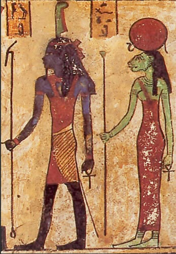
A Terra e o Céu
De Shu e Tefnut nasceram Geb, a Terra, e Nut, o Céu. Mas o amor entre eles era tão grande que permaneciam juntos, e não havia espaço para os homens nem para os deuses caminharem sob a luz. Então Shu ergueu Nut para as alturas, separando-a de Geb, e assim o céu se elevou acima da terra, criando o palco onde toda vida haveria de acontecer.
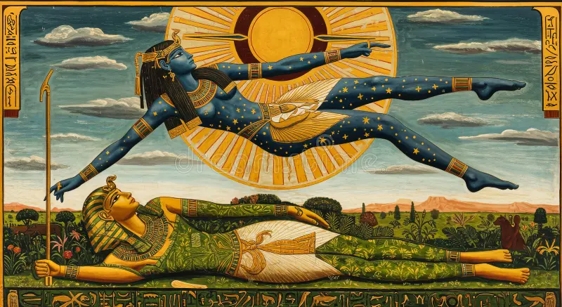
Os Filhos
Do encontro entre Geb e Nut vieram ao mundo Osíris, Ísis, Seth e Néftis. Cada um carregava em si uma força antiga e poderosa, destinada a moldar o destino dos vivos e dos mortos. Com eles, o Egito ganhou deuses que não apenas governavam os céus, mas também guardavam a colheita, o trono, os mistérios e o fim de todas as coisas.
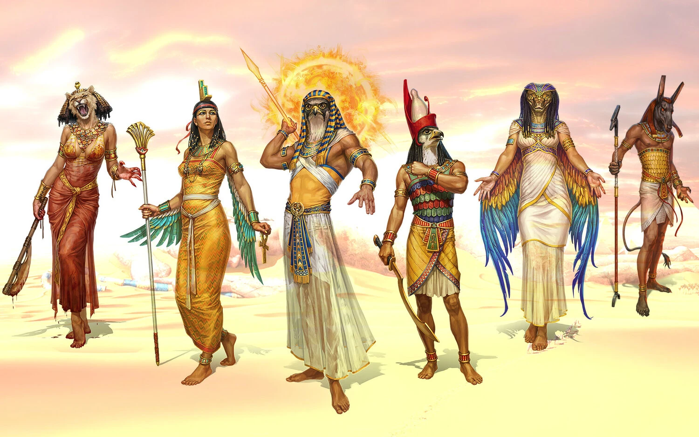
A ordem do Sol
Mas ainda faltava ao mundo a presença que tudo observa. Foi então que surgiu Rá, o grande deus-sol, que atravessa os céus em sua barca sagrada, levando luz ao mundo e afastando as trevas. A cada amanhecer, ele renova a vida; a cada entardecer, enfrenta o perigo da noite. E assim se estabeleceu a ordem celeste, onde o sol não era apenas luz, mas também poder, proteção e eternidade.
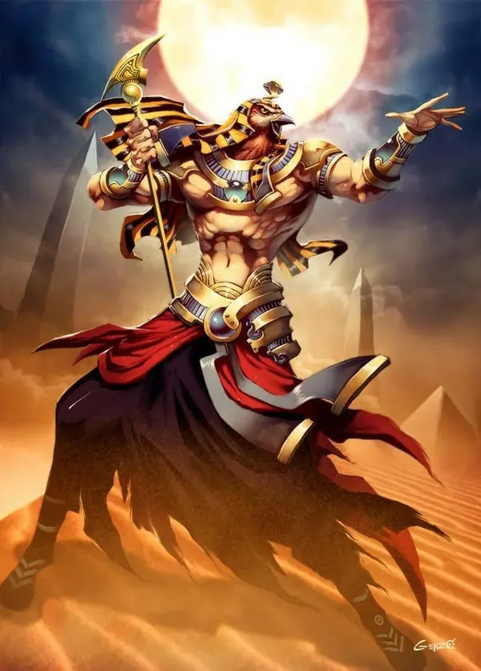
A Era dos Grandes Deuses
O Governo de Osíris
Quando o mundo já estava formado, Osíris recebeu a missão de governar os homens e ensinar-lhes a cultivar a terra, a honrar os ciclos da natureza e a viver segundo a justiça. Sob sua presença, o Egito floresceu, pois ele era senhor da fertilidade, da colheita e da esperança. Mas a paz dos deuses, por mais bela que pareça, jamais dura para sempre.
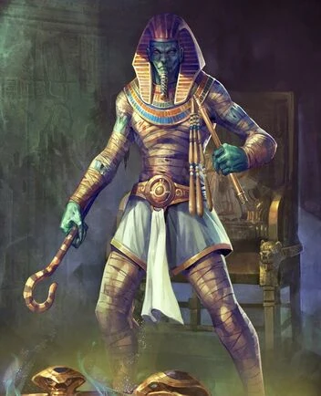
A inveja de Seth
Seth, movido pela inveja e pela fúria, voltou-se contra seu irmão Osíris. No coração do conflito ardia o desejo de poder, e das mãos de Seth nasceu a traição que abalou o mundo. Assim, o que era ordem tornou-se luto, e o que era abundância mergulhou em desespero. Foi um tempo em que até os deuses sentiram o peso da perda.
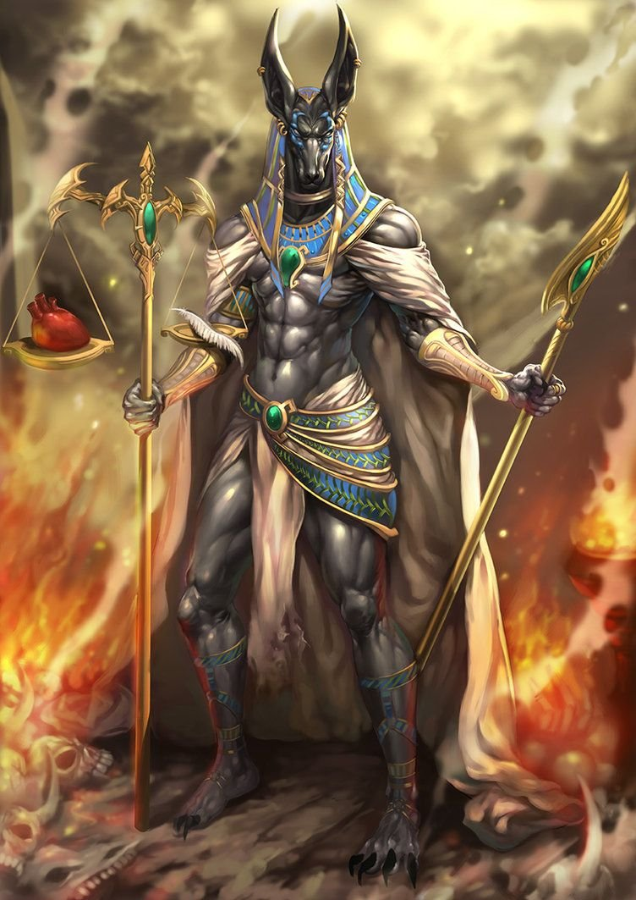
A Busca de Ísis
Mas Ísis, senhora da sabedoria e da magia, não abandonou o marido caído. Com coragem maior que o medo, ela percorreu terras e águas em busca dos restos de Osíris, reunindo o que havia sido dispersado pela violência. Seu amor atravessou a escuridão, e sua arte sagrada enfrentou a morte como uma chama que não se apaga.
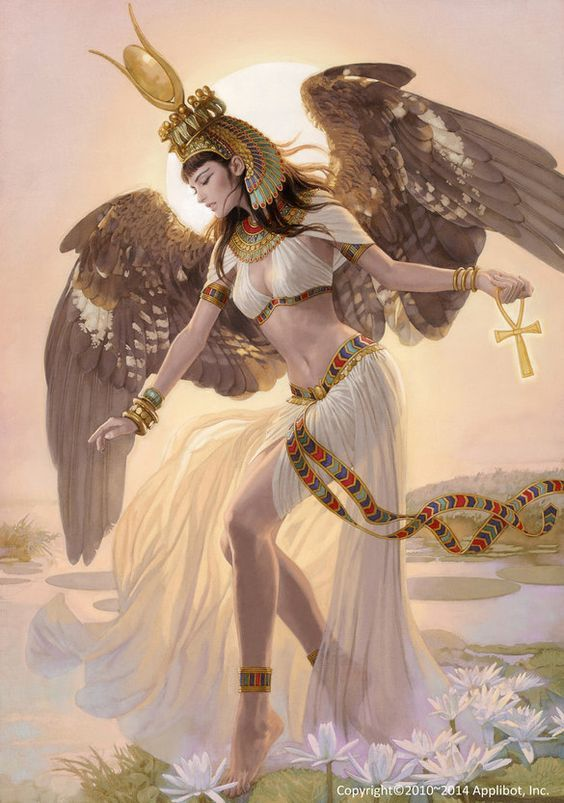
O Renascimento de Osíris
Graças ao poder de Ísis, Osíris não foi completamente vencido. Ele renasceu como soberano do além, tornando-se o grande juiz das almas e o guardião da vida após a morte. Desde então, deixou o trono dos vivos para reinar no reino invisível, onde cada alma é pesada e cada destino é revelado. E assim a morte passou a ter rosto, lei e passagem.
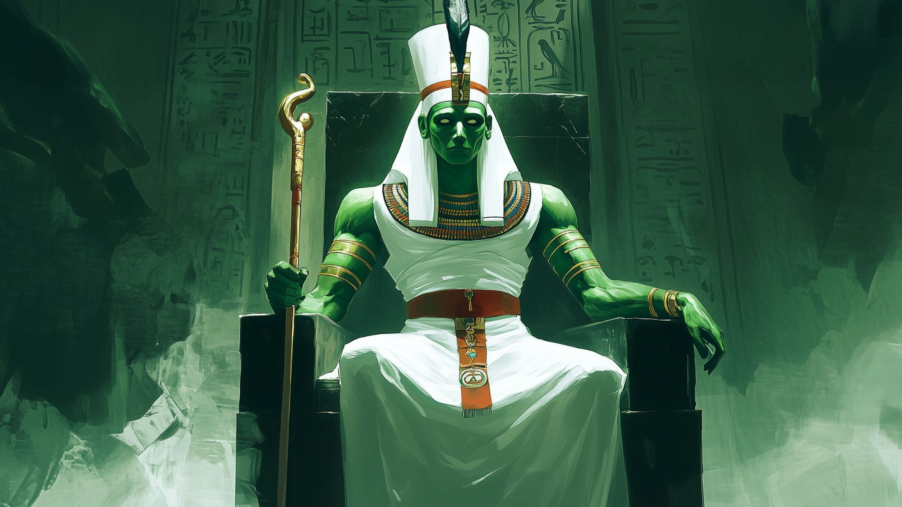
O Nascimento de Hórus
De Ísis nasceu Hórus, o filho destinado a restaurar a justiça. Ainda jovem, ele foi protegido em segredo, pois o mundo pertencia à disputa entre o herdeiro legítimo e o usurpador. Crescido em força e propósito, Hórus se preparou para reclamar o que era seu por direito, e seu destino ficou ligado ao próprio trono do Egito.
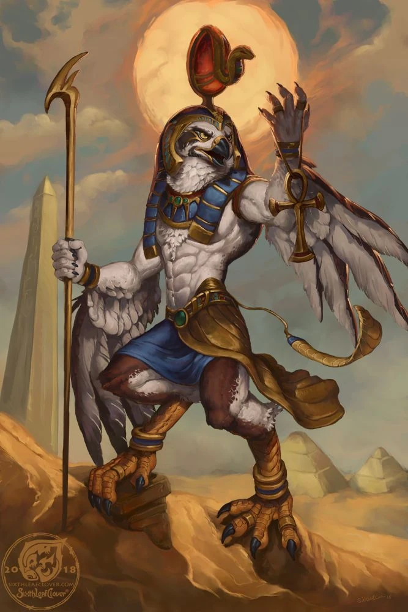
A Batalha
O Conflito de Hórus e Seth
Quando chegou o tempo certo, Hórus enfrentou Seth em uma luta que ecoou pelos céus e pela terra. Não era apenas uma disputa entre dois deuses, mas o confronto entre a ordem e o caos, entre a justiça e a violência. Durante longos embates, o destino do Egito permaneceu suspenso, como uma lâmina prestes a cair.
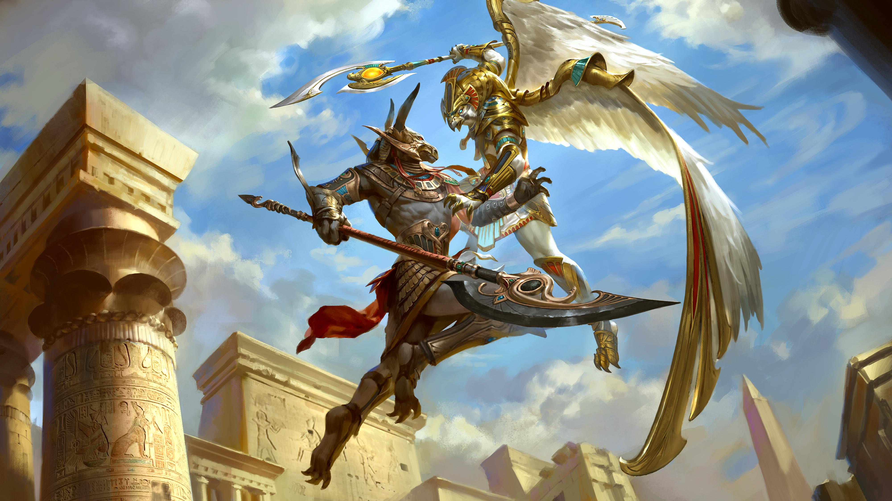
O triunfo da Ordem
Por fim, a legitimidade de Hórus prevaleceu, e sua vitória restaurou a harmonia entre os deuses e os homens. Ele se tornou o protetor dos faraós, símbolo do poder sagrado que governa com equilíbrio e autoridade. Assim, o Egito compreendeu que todo rei terreno carrega a sombra do falcão divino, guardião da ordem e da continuidade.
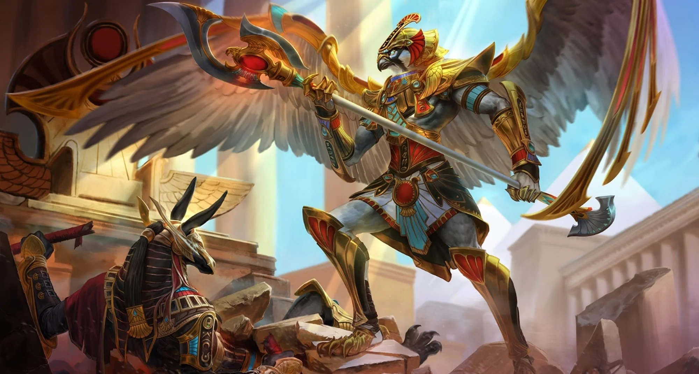
O Faraó e o Divino
Desde então, os faraós passaram a ser vistos como ligados aos deuses, representantes da vontade celeste sobre a terra. Seu dever era manter a maat, a ordem sagrada que sustenta o universo contra o retorno do caos. E enquanto a maat fosse preservada, o Nilo continuaria a correr, os templos permaneceriam de pé e o povo seguiria sob a proteção dos antigos deuses.
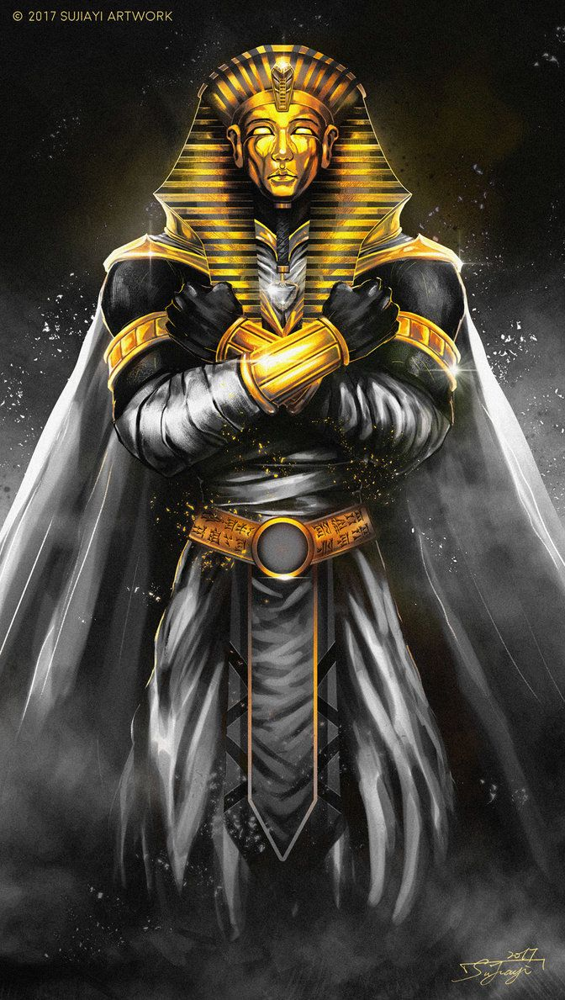
O Reino dos mortos
A Jornada da Alma
Quando a vida se encerra, a alma não desaparece: ela parte para uma travessia misteriosa, guiada por ritos, palavras sagradas e a esperança de alcançar a eternidade. Nada termina de fato; apenas se abre outra estrada, oculta aos olhos dos vivos. E nessa estrada, cada passo exige memória, pureza e coragem.
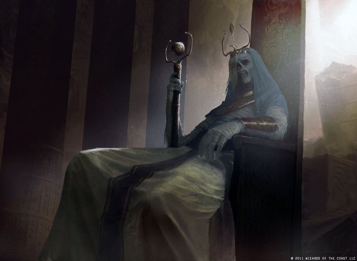
O Julgamento de Osíris
No salão do além, o coração do morto é pesado diante de Osíris e dos grandes deuses. Se a alma viveu em harmonia com a verdade, ela pode seguir adiante. Mas se foi tomada pela mentira e pela corrupção, será consumida pelo esquecimento. Assim, o Egito ensinou que a vida presente ecoa além da morte, e que cada ação deixa sua marca no invisível.
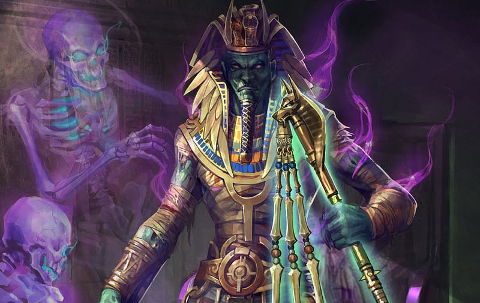
A Eternidade Abençoada
Aqueles que vencem o julgamento alcançam os campos eternos, onde a paz floresce e o tempo já não devora os dias. Lá, o espírito repousa sob a proteção dos deuses, livre da dor e da ruína. E é por isso que os antigos egípcios construíram tumbas, ergueram templos e escreveram encantamentos: para que a alma não se perdesse no caminho e pudesse viver para sempre entre os mistérios do além.
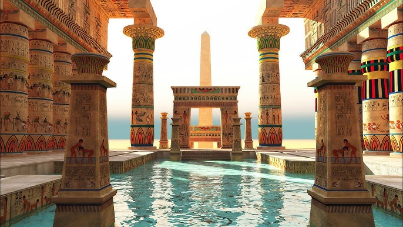